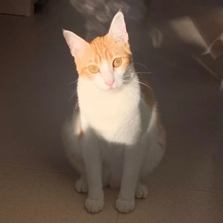

Michifú

Edad: 2 años
Género: Macho 🐾
Vacunas: Al día ✅
Esterilizado: Sí ✅
Descripción:
Michifú es un gato cariñoso y juguetón que busca un hogar lleno de amor. Le encanta jugar con pelotas y dormir en lugares soleados.
¡Quiero Adoptar a Michifú!